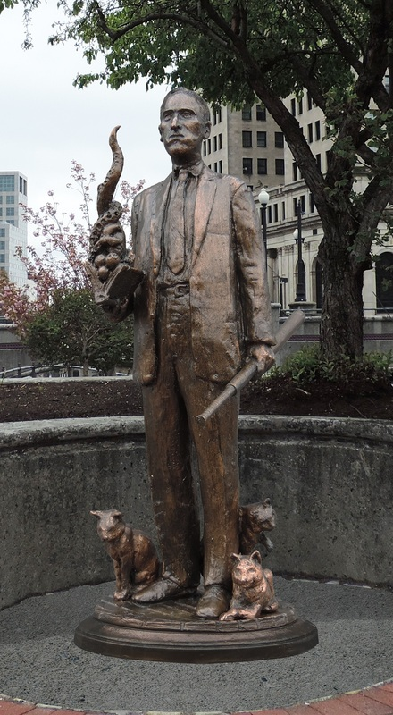

VIDA Y OBRA DE HP LOVECRAFT
un vistaso a la vida del hombre que plasmo un multiverso de terror

Howard Phillips Lovecraft (Providence, Rhode Island; 20 de agosto de 1890-Providence; 15 de marzo de 1937), más conocido como H. P. Lovecraft, fue un escritor estadounidense, autor de relatos y novelas de terror y ciencia ficción. Se le considera un gran innovador del cuento de terror, al que aportó una mitología propia —los Mitos de Cthulhu—, desarrollada en colaboración con otros autores, actualmente en vigencia. Su obra constituye un clásico del horror cósmico, una línea narrativa que se aparta de las tradicionales historias de terror sobrenatural —satanismo, fantasmas—, incluyendo elementos de ciencia ficción como, por ejemplo, razas alienígenas, viajes en el tiempo o existencia de otras dimensiones
Su familia provenía de una distinguida tradición burguesa venida a menos, razón que marcó, en buena medida, la personalidad elitista del autor de Providence. Su padre murió cuando este era aún muy pequeño y su madre lo sobreprotegió intentando que no se relacionara con gente que ella consideraba de clase inferior. En 1921, cuando el autor contaba con treinta y un años, la muerte de su madre le afectó profundamente. Luego, conoció a la escritora y comerciante Sonia Greene, con quien contrajo nupcias y se mudó a Nueva York, pero fracasó en su matrimonio. Tras sentir una profunda aversión por la vida neoyorquina —donde se acrecentó su racismo— Lovecraft decidió volver a su Providence natal donde vivió con sus tías hasta el fin de sus días. De su estancia en Nueva York, Lovecraft continuó intercambiando correspondencia con autores como Robert E. Howard, Robert Bloch, Clark Ashton Smith o August Derleth, para quienes trabajó como escritor fantasma con algunos de ellos formando lo que se denominó, posteriormente, el Círculo de Lovecraft. Dichos autores colaboraron en buena medida en el desarrollo de su propia literatura y salvaron la obra de Lovecraft del olvido. Daba largos paseos nocturnos y le invadía una profunda sensación de soledad y frustración.8 Durante esa época desarrolló sus obras más representativas como The Call of Cthulhu —La llamada de Cthulhu— (1926), At the Mountains of Madness —En las montañas de la locura— (1931) o The Case of Charles Dexter Ward —El caso de Charles Dexter Ward— (1941).
Publicó en vida varias de sus obras gracias a la revista estadounidense Weird Tales de género pulp, la primera de ellas fue Dagón. Asimismo, Lovecraft cultivó la poesía, el ensayo y la literatura epistolar. Se carteó con sus colegas de profesión durante años y dejó escrita una correspondencia que asciende a cien mil misivas. Mil de estas fueron publicadas en cinco volúmenes por Arkham House, la editorial fundada por dos seguidores de Lovecraft, August Derleth y Donald Wandrei. Su estilo literario es inconfundible y muy personal. Lo caracteriza el exceso de palabras polisílabas y de adjetivos cultos como «atávico», «numinoso», «inmemorial», «arcano». Su tono siempre serio y solemne ha sido copiado en innumerables ocasiones por muchos escritores de terror como, por ejemplo, por los autores del Círculo de Lovecraft. Sus creaciones se han vuelto muy populares, como los dioses Cthulhu, Nyarlathotep, Azathoth, el libro ficticio Necronomicón o personajes como Erich Zann o Herbert West, que han aparecido en diversas adaptaciones cinematográficas.
El legado de Lovecraft es muy extenso, abarcando literatura, ensayo, historietas, cine, música, juegos de mesa y videojuegos. Algunos de los ejemplos más notables son, en literatura, los relatos de Stephen King basados en la mitología de Lovecraft, como Jerusalem's Lot y Pesadillas y alucinaciones;13 el ensayo escrito por el propio H. P. Lovecraft, El horror sobrenatural en la literatura —el cual es, además, uno de los mejor considerados sobre el género de terror literario—;14 algunos cómics guionizados por el escritor Alan Moore, como Providence;15 grupos de rock and roll y de heavy metal como Metallica o Iron Maiden, que han mencionado el nombre del autor de Providence en algunos de sus álbumes principales; juegos de rol como La llamada de Cthulhu, publicado por la editorial Chaosium, o videojuegos como Alone in the Dark o Prisoner of Ice, que han basado sus temáticas en la mitología de los Mitos de Cthulhu. Asimismo, el séptimo arte ha llevado numerosas veces la obra de Lovecraft a la gran pantalla como, por ejemplo, Re-Animator (1985) de Stuart Gordon, El color del espacio exterior (2019) de Richard Stanley e, incluso, el director Guillermo del Toro lleva queriendo adaptar desde 2006 la novela En las montañas de la locura.
Apenas reconocido en vida, a día de hoy su obra ha sido traducida a más de veinticinco idiomas y su nombre es uno de los más relevantes en cuanto al horror de ficción se refiere. Murió en 1937, prácticamente en la pobreza, debido a un cáncer intestinal.20 Más allá de su obra, se le considera un genio de la literatura de terror y uno de los escritores más influyentes del género fantástico del siglo xx

Howard Phillips Lovecraft nació el 20 de agosto de 1890 a las 9 de la mañana en el hogar familiar situado en el n.º 194 —hoy 454— de Angell Street, en Providence, capital del estado de Rhode Island. La casa fue derribada en 1961. H. P. fue el hijo único de Winfield Scott Lovecraft (1853-1898) —representante de ventas de la Gorham Silver Company, dedicada al comercio de la plata, metales preciosos y joyería— y de Sarah Susan Phillips (1857-1921), la segunda de los cuatro hijos de Whipple Van Buren Phillips y Rhoby Alzada Place. Para ambos era su primer matrimonio, aunque los dos habían superado los treinta años cuando firmaron su enlace,Lovecraft procedía de unos ancestros distinguidos; en cuanto a su línea materna, los Phillips, se podía rastrear su linaje casi hasta el Mayflower, ya que los antepasados maternos se remontaban a la llegada de George Phillips a Massachusetts en 1630.4 Cuando el autor visitó algunas de las tierras de sus ancestros al este del estado de Rhode Island, el apellido de Phillips era recordado con cariño y respeto.n. Su línea paterna también era de origen británico y el escritor pudo rastrear su apellido —Lovecraft o Lovecroft— hasta el siglo xv. Al pequeño y solitario Howard le gustaba frecuentar parajes extraños y apartados para poder dar rienda suelta a su exaltada imaginación. En esos lugares —cuevas, arboledas alejadas, etcétera— recreaba situaciones históricas o se ensimismaba en la observación de pequeños detalles que pasaban inadvertidos al resto de las personas, pero que a él le fascinaban, como detenerse a escuchar a las hadas del bosque o imaginar lo que podría existir en el espacio exterior. Quizás una de las razones por las que le gustaba tanto evadirse era por la estricta atadura a la que lo sometía su madre, diciéndole que él no debía jugar con niños de menor categoría o insistiendo en que era feo y que nunca llegaría a triunfar.
Al pequeño y solitario Howard le gustaba frecuentar parajes extraños y apartados para poder dar rienda suelta a su exaltada imaginación. En esos lugares —cuevas, arboledas alejadas, etcétera— recreaba situaciones históricas o se ensimismaba en la observación de pequeños detalles que pasaban inadvertidos al resto de las personas, pero que a él le fascinaban, como detenerse a escuchar a las hadas del bosque o imaginar lo que podría existir en el espacio exterior. Quizás una de las razones por las que le gustaba tanto evadirse era por la estricta atadura a la que lo sometía su madre, diciéndole que él no debía jugar con niños de menor categoría o insistiendo en que era feo y que nunca llegaría a triunfar
Cuando Lovecraft tenía casi tres años, su padre sufrió una crisis nerviosa en la habitación de un hotel de Chicago, donde se encontraba alojado por motivos de trabajo. Le ingresaron en el Butler Hospital, centro psiquiátrico de Providence, y fue incapacitado legalmente debido a una serie de trastornos de índole neurológico. A partir de ese momento y durante los cinco años siguientes, permaneció ingresado en ese hospital, donde murió el 19 de julio de 1898 con el diagnóstico de paresia general, una fase terminal de la neurosífilis. Aunque algunos biógrafos afirman que al niño Lovecraft le informaron de que su padre estaba paralizado y en estado comatoso durante ese período, todas las evidencias parecen demostrar que no fue así. Con la muerte del progenitor de Lovecraft, la educación del niño recayó sobre su madre, sus dos tías —Lillian Delora Phillips y Annie Emeline Phillips— y, en especial, sobre su abuelo materno, un importante empresario llamado Whipple Van Buren Phillips; todos ellos residían en la casa familiar,Lovecraft fue un niño prodigio. Recitaba poesía a los dos años, leía a los tres y empezó a escribir a los seis, y a los ocho años de edad ya había leído gran cantidad de libros de la biblioteca particular de su abuelo. Uno de los géneros que más le apasionó en su infancia fue el de las novelas policíacas, llevándolo incluso a formar la «Agencia de detectives de Providence» a la edad de trece años. A los quince escribió su primer relato como tal, The Beast in the Cave —La bestia en la cueva—, imitación de los cuentos de horror góticos. A los dieciséis escribió una columna de astronomía para el Providence Tribune,Debido a la alta alcurnia de su madre, que no quería que el pequeño Howard se mezclara con niños «inferiores» a él, la educación primaria de Lovecraft fue eminentemente autodidacta. Su abuelo materno lo alentaba a la lectura, siendo esta una de sus aficiones favoritas. En la inmensa biblioteca de su abuelo descubrió —con un ejemplar de la Ilíada para niños entre las manos— el paganismo grecolatino y Las mil y una noches, aunque a una edad muy temprana —a los cinco años— se declaró ateo, convicción que mantuvo hasta su muerte. Esto ayudó a que su imaginación se desarrollase rápidamente en comparación con el resto de los chicos de su edad, lo cual le produjo una falta de adaptación con estos. Cuando ellos querían jugar con espadas o a juegos fundamentalmente físicos, él prefería llevar a cabo entretenimientos más pausados e imaginativos, como representaciones históricas,Su falta de perseverancia y de salud hicieron que Lovecraft no asistiera al colegio hasta los ocho años y tuvo que dejarlo después de un año. Durante su absentismo escolar, seguía leyendo con voracidad.39 Adquirió conocimientos de química y astronomía, llegando incluso a escribir como aficionado en algunas revistas científicas.40 Publicó varias revistas de circulación limitada, comenzando en 1899 con La gaceta científica.41 Cuatro años después, regresó a la escuela pública Hope Street, donde cursó dos años y medio en la educación secundaria, hasta que abandonó definitivamente los estudios.